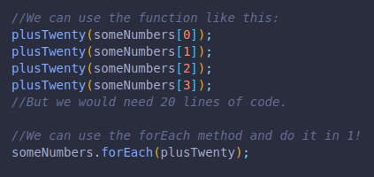
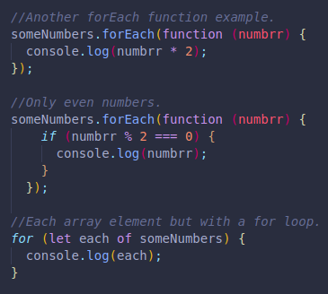

This method accepts a callback function.
It calls the function once for every element/item in the array.
Here we have an array with 20 items, also a function which will take a number and return a console log of that number plus 20.
We can always run the function separately for each array item, but it would take longer.
Using the forEach() method makes it much easier.
Here are a few more examples.
The first code runs a function for each of the items and console logs the product of a number times two.
The second code console logs only even numbers, it checks every item too.
The third code shows us that we can also use a for loop to access every item in the array.
And here, we created an object, we used the forEach() method to console log a string that includes the keys and values of each pair in the object.
But also that we can do the same with another for of loop!